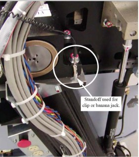
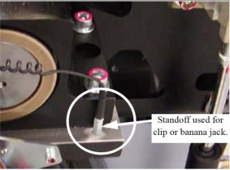
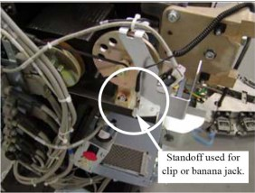
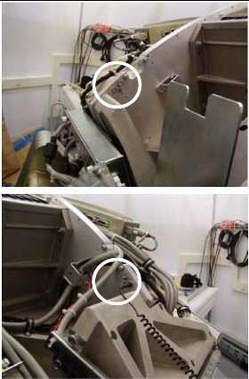

Operating Documentation
Direction 5193574-800, Rev# 22
LightSpeed 7.X Service Methods
Module Version 1.0, Version Date 4/22/10
Operating Documentation |
Table 1: Symbols
| SYMBOL | PUBLICATION | DESCRIPTION |
| 417-5032 | Alternating Current |
| 335-1 | Three-phase Alternating Current |
| 335-1 | Three-phase Alternating Current with neutral conductor |
| Direct Current | |
| 417-5019 | Protective Earth (Ground) |
| 348 | Attention, consult ACCOMPANYING DOCUMENTS |
| 417-5008 | OFF (Power: disconnection from the mains) |
| 417-5007 | ON (Power: connection to the mains) |
| Warning, HIGH VOLTAGE | |
| Emergency Stop | |
| Type B | |
| 417-5339 | X-ray Source Assembly Emitting |
| 417-5009 | Standby |
| Start | |
| Table Set | |
| Abort | |
| Intercom | |
| (on Operator Console) Power On: light on Standby: light off |
The gantry has defined ESD attachment points that allow easy attachment for banana clip and alligator clip style connections. There are points on the stationary frame on each side of the gantry and rotating assembly behind the DAS plate. The stationary frame locations should always be used if the length of your ESD strap is sufficient.
Illustration 1: Gantry Right Side Clip Example

Illustration 2: Gantry Right Side Banana Jack Example

Illustration 3: Gantry Left Side Connection

Illustration 4: Rear of DAS Plate ESD Connection Points

This appendix contains the following procedures that may be useful during a software load:
CDROM - Mount Process
CDROM - Unmount Process
Insert a CD into the DVD ROM drive.
Open a Shell window.
Type: su - <ENTER>
Type the password and press <ENTER>
If login was successful, continue with manually mounting the CD:
Type: cd /<ENTER>
Type: mount /mnt/cdrom<ENTER>
Type: cd /mnt/cdrom<ENTER>
The CD has now been mounted. To see what is on it, type:
ls /mnt/cdrom<ENTER>
Unmount the CD in order to remove it from the drive; do this by typing the following:
Type: cd /<ENTER>
Type: umount /mnt/cdrom<ENTER>
Type: eject<ENTER>
Remove the CD from the DVD-ROM drive and close the drive.